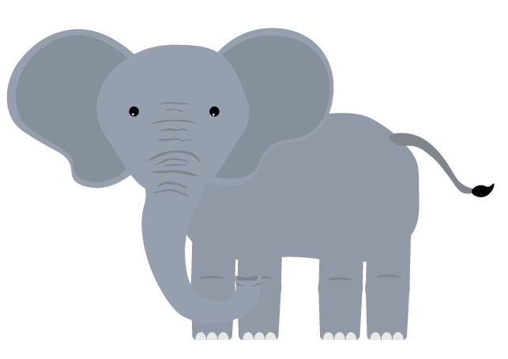

ELEFANT
Vægt: Op til 5 tons
Højde: Op til 3 meter høj, op til 6 meter lang
Levealder: Maksimum 70 år
Føde: Blade, kviste, bark, frugter, græs, urter og rødder.
Levested:Bådei Afrika og i Asien.
Sjove facts om elefanten
Elefanter er bange for bier.
Elefanten er det største landlevende dyr i dag.
Elefanter kan høre andre elefanters trutten på op til 8 kilometers afstand
Voksne elefanter indtager 130-180 kg føde pr. dag.